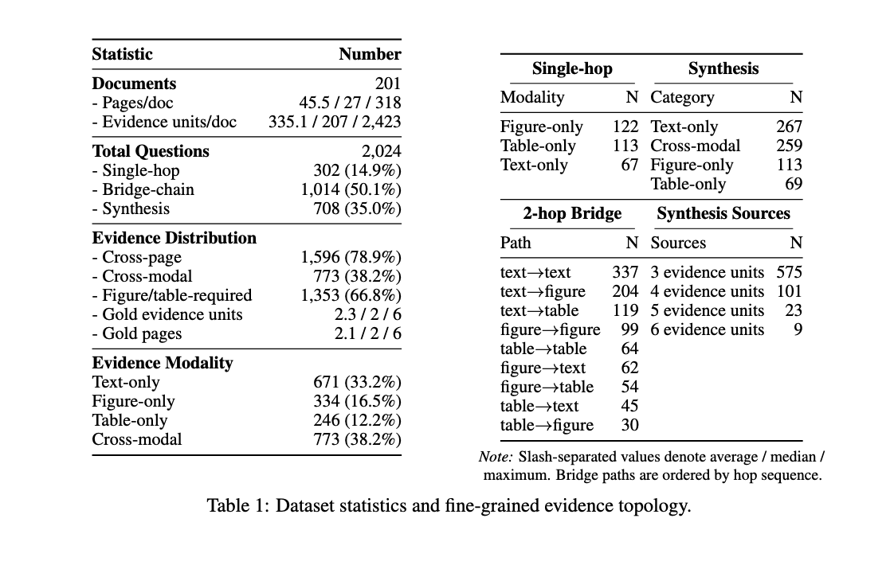
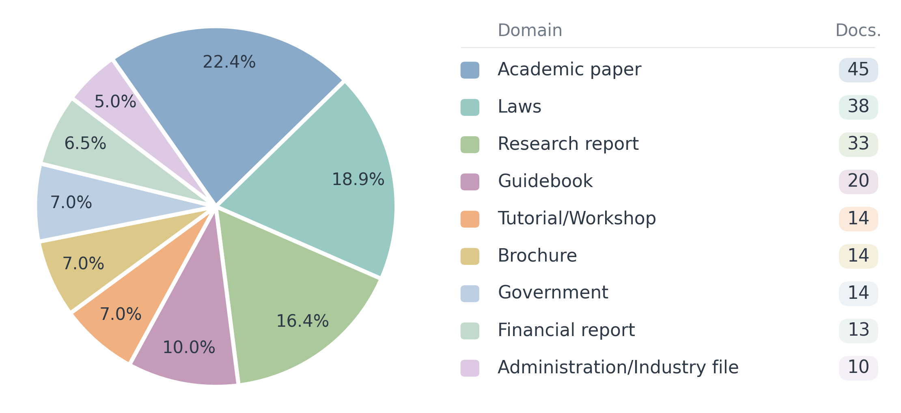
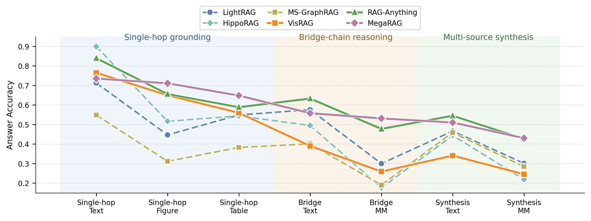
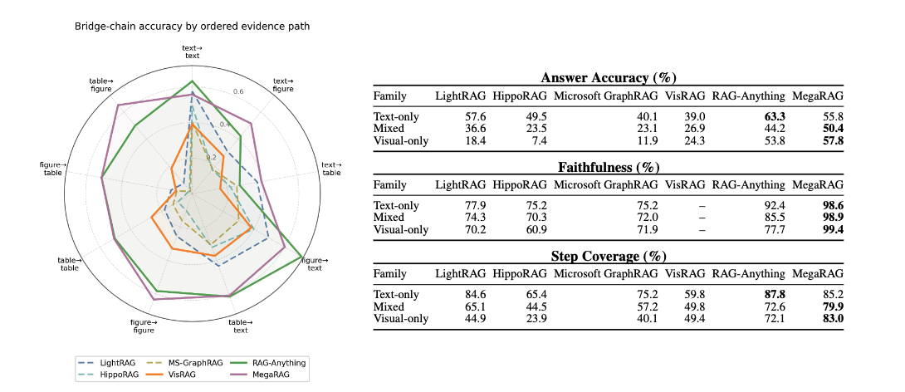

TopoGraphRAG-Bench
Evaluating Multimodal GraphRAG on
Layout-Grounded Evidence Reasoning
Abstract
Real-world documents distribute evidence across text, tables, figures, captions, and page layouts. Answering complex questions over such documents therefore requires more than retrieving relevant passages: systems must recover the evidence topology that connects heterogeneous evidence units. Existing GraphRAG evaluations focus primarily on text-derived chunks, entities, and relations, while multimodal document RAG benchmarks evaluate cross-modal retrieval and generation without directly testing whether systems recover the intended reasoning structure. We introduce TopoGraphRAG-Bench, a layout-grounded benchmark for multimodal evidence reasoning in GraphRAG. The benchmark contains 2,024 questions over 201 long, visually rich documents, with evidence grounded in text, figures, and tables. Each instance is constructed bottom-up from layout-grounded evidence units and assigned one of three controlled topologies: single-hop retrieval, bridge-chain reasoning, or multi-source synthesis. To ensure that questions preserve their intended structure, we apply counterfactual validation for shortcut resistance, modality necessity, and evidence necessity. We evaluate text-only GraphRAG, page-level visual retrieval, and multimodal GraphRAG systems using retrieval, generation, and topology-aware reasoning metrics. Multimodal GraphRAG systems achieve the strongest overall performance, but still fail when visual-textual evidence alignment or multi-unit composition is incomplete. Text-only GraphRAG struggles when key dependencies are grounded in figures or tables, while page-level visual retrieval lacks the fine-grained structure needed for topology recovery. These results suggest that future GraphRAG systems must model not only textual entities and relations, but also layout structure, modality alignment, and the reasoning roles of evidence units.
Highlights
- Topology-aware multimodal GraphRAG benchmark. We introduce TopoGraphRAG-Bench, a layout-grounded benchmark comprising 2,024 QA pairs over 201 long documents, covering single-hop retrieval, bridge-chain reasoning, and multi-source synthesis across text, figures, and tables.
- Bottom-up evidence-topology construction. We construct questions bottom-up from verifiable, layout-grounded evidence units rather than whole-document prompts, and apply counterfactual validation to assess shortcut resistance, modality necessity, and evidence necessity.
- Diagnostic evaluation of GraphRAG paradigms. We evaluate text-only GraphRAG, page-level visual retrieval, and multimodal GraphRAG systems, revealing persistent challenges in cross-modal alignment and fine-grained evidence-topology recovery.
Overview
TopoGraphRAG-Bench evaluates layout-grounded multimodal evidence reasoning in GraphRAG. It contains 2,024 questions constructed from 201 long documents sampled from MMDocIR, spanning nine domains, including academic papers, legal documents, research reports, and financial reports. The documents average 45.5 pages and approximately 13,000 words, with evidence distributed across text, figures, tables, and page layouts.
Questions are organized into three controlled reasoning topologies: single-hop retrieval (302 questions), bridge-chain reasoning (1,014), and multi-source synthesis (708). Cross-modal questions account for 38.2% of the benchmark, while 66.8% require figure or table evidence. Bridge-chain questions cover all nine ordered modality paths among text, figures, and tables. Each question includes a gold answer, page- and layout-grounded evidence references, and evidence-topology annotations that make the required evidence and its reasoning roles explicit.


Construction
The TopoGraphRAG-Bench construction pipeline follows three main steps. (1) Evidence preparation and anchor discovery: We organize layout-grounded text, figure, and table units from MMDocIR, retaining their document, page, layout, and modality identifiers. Visual units preserve their original images and are supplemented with OCR and VLM descriptions. Recurring entities across units serve as anchors for evidence composition. (2) Topology-controlled question construction: Single-hop questions are grounded in one evidence unit; bridge-chain questions connect evidence units through ordered dependencies, with intermediate hops resolving bridge entities needed to locate or interpret subsequent evidence; synthesis questions combine three to six required evidence points to support a joint conclusion. Gold answers and topology annotations retain links to the source evidence. (3) Counterfactual validation and quality assurance: Single-source counterfactual probes screen bridge-chain candidates for shortcuts, OCR-aware checks assess modality necessity, and synthesis candidates undergo leave-one-out evidence tests and a text-only retrieval simulation. A stratified human audit further checks answer correctness, evidence grounding, attribution accuracy, and topology consistency.
Evaluation
We evaluate six systems spanning three retrieval paradigms: LightRAG, HippoRAG, and Microsoft GraphRAG for text-only GraphRAG; VisRAG for page-level visual retrieval; and RAG-Anything and MegaRAG for multimodal GraphRAG. Evaluation combines topology-enriched Context Precision and Context Recall with Answer Accuracy, Faithfulness, Response Relevancy, and Step Coverage, which measures coverage of annotated hop results or synthesis evidence points. MegaRAG and RAG-Anything achieve the strongest overall generation performance, reaching answer accuracy scores of 53.5% and 53.0%, respectively, while RAG-Anything obtains the strongest text-based retrieval scores. Performance varies substantially with evidence topology and modality: text-only GraphRAG performs competitively on textual single-hop questions but degrades when bridge dependencies require figures or tables, while VisRAG struggles on multimodal bridge and synthesis questions despite direct access to page images. These differences also appear in coverage of intermediate reasoning results: on visual-only bridge paths, MegaRAG achieves 83.0% Step Coverage, compared with 44.9% for LightRAG and 49.4% for VisRAG. The remaining variation across ordered bridge paths and the difficulty of multi-source synthesis highlight persistent challenges in cross-modal alignment and evidence composition.


Case Study
Explore the highlighted source evidence, system responses, retrieved contexts, and step-level judge decisions in our interactive case study.
Loading case study…